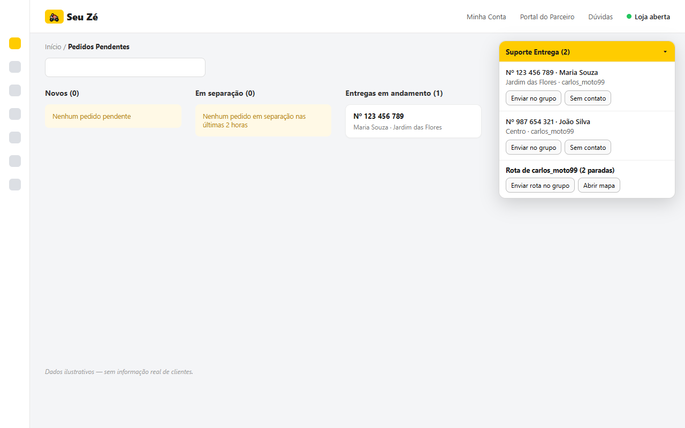

Suas entregas funcionando sozinhas, com ou sem grupo.
O Suporte Entrega lê os pedidos do painel do Seu Zé e avisa o grupo do WhatsApp por você: pedido saindo, prazo quase estourando, atraso, rota do motoboy e o telefone do cliente quando o entregador não o encontra. Não usa grupo? No modo individual, a voz avisa a loja e o motoboy recebe o telefone do cliente no WhatsApp particular.
7 dias grátis. Sem cartão e sem fidelidade.
Veja funcionando (45 segundos)
Pedido entrando, mensagem indo sozinha para o grupo, rota, telefone do cliente para o motoboy e aviso de atraso. Dados de exemplo.
O que ele faz por você
A extensão fica no Chrome do computador da loja, com o painel do Seu Zé e o WhatsApp Web abertos. Ela lê os pedidos que o próprio painel já mostra e avisa os motoboys, sem ninguém precisar copiar e colar.
Pedido no grupo, sozinho
Quando o pedido ganha entregador, o grupo recebe número, nome, endereço, entregador e os horários limite para sair da loja e para entregar.
Telefone do cliente na hora
O motoboy não achou o cliente? Ele escreve "suporte" e o número do pedido no grupo ou no WhatsApp da loja. A extensão busca o telefone no painel e responde em segundos, ali mesmo.
Aviso antes de atrasar
Avisa o grupo quando o prazo de entrega está quase estourando, cobra o entregador pelo nome a cada 3 minutos quando o relógio fica vermelho e manda "ATRASO" quando passa, repetindo até o pedido ser entregue.
Turbo com prazo próprio
Pedidos Turbo têm prazos mais curtos (5 minutos para sair, 15 para entregar) e aparecem destacados no grupo.
Rota montada
Motoboy com 2 ou mais pedidos recebe a ordem das paradas e o link do mapa, sem ninguém precisar montar.
Aviso em voz alta
Fala no computador da loja quando entra pedido, quando ele está para expirar e quando ainda não saiu no prazo. Ninguém precisa ficar olhando a tela.
Relógio no vermelho? O grupo sabe
Quando o relógio do pedido fica vermelho no Seu Zé e o motoboy ainda não saiu, o grupo recebe o aviso na hora para sair.
Com grupo ou sem grupo
Você escolhe no painel amarelo. Com grupo, tudo vai para o grupo dos motoboys. Sem grupo, a voz avisa a loja e cada motoboy pede o telefone do cliente no particular. Configura em 2 minutos, com botões.
Não precisa ficar no grupo
Use o WhatsApp normalmente, até pelo aplicativo do computador. A extensão abre o grupo sozinha, envia e volta para a conversa em que você estava.
Menos ligação, menos atraso, menos penalidade
Sem a extensão, alguém da loja fica o dia todo copiando pedido para o grupo e procurando telefone de cliente. Com ela:
- O pedido ganha entregador e já vai para o grupo com os horários limite.
- O motoboy sabe exatamente até que horas tem que sair e entregar.
- Se não achar o cliente, recebe o telefone sem esperar a loja.
- Se o prazo apertar, todo mundo é avisado antes de virar atraso.

Começa em 5 minutos
Funciona no Chrome do computador onde a loja usa o painel do Seu Zé. Veja o passo a passo completo.
Instale no Chrome
Clique em "Instalar no Chrome" e depois em "Usar no Chrome".
Abra o Seu Zé e o WhatsApp Web
O painel amarelo aparece no Seu Zé, pede o e-mail da loja e pergunta se os motoboys ficam num grupo ou falam com a loja no particular.
Use 7 dias grátis
Tudo liberado. Em outro computador da loja, é só usar o mesmo e-mail.
Um preço só, tudo incluído
Sem taxa de adesão e sem fidelidade. Pagamento pelo PIX, direto na tela da extensão, e liberação logo depois.
- Pedidos, atrasos e rotas no grupo do WhatsApp
- Modo individual para loja sem grupo de motoboys
- Telefone do cliente quando o motoboy pede suporte
- Avisos em voz alta no computador da loja
- Até 2 computadores com o mesmo e-mail
- Suporte pelo WhatsApp
Dúvidas
Não achou a resposta? Chame no WhatsApp.
O que eu preciso para usar?
Um computador com o Google Chrome, o painel do Seu Zé aberto e o WhatsApp Web da loja aberto no mesmo Chrome. Serve com ou sem grupo de motoboys. Não precisa de celular extra nem de outro sistema.
Uso o WhatsApp pelo aplicativo do computador. Funciona?
Sim. O aplicativo continua funcionando normalmente. A extensão usa o WhatsApp Web no Chrome, que fica conectado ao mesmo tempo que o aplicativo (é só ler o QR code uma vez no celular, em Aparelhos conectados). Se a aba do WhatsApp Web não estiver aberta, a extensão abre sozinha, fixada no canto da barra de abas.
Como o motoboy pede o telefone do cliente?
Com grupo: ele escreve no grupo a palavra "suporte" e o número do pedido (ou o primeiro nome do cliente). Sem grupo: ele manda no WhatsApp da loja a palavra "suporte" e o número completo do pedido. A extensão reconhece, busca o telefone no painel do Seu Zé e responde na mesma conversa.
Não tenho grupo de motoboys. Serve para mim?
Serve. No painel amarelo, escolha o modo Individual. Nada é mandado em grupo: a voz avisa a loja quando entra pedido, quando ele está para expirar e quando ainda não saiu no prazo, e o motoboy pede o telefone do cliente no WhatsApp particular da loja. Por segurança, só vale o número completo de um pedido que está em entrega.
Por que aparece o aviso "começou a depurar este navegador"?
O painel do Seu Zé só abre o contato do cliente com um clique de verdade. Para fazer esse clique, a extensão usa por alguns segundos um recurso do Chrome, que mostra esse aviso. Ele some sozinho quando a busca termina. A extensão não lê outras abas.
E os pedidos de retirada no balcão?
A extensão ignora sozinha os pedidos de retirada, em que o cliente busca na loja: eles não aparecem no painel, não vão para o grupo e não geram aviso de atraso.
Funciona em mais de um computador?
Sim. Instale e use o mesmo e-mail em até 2 computadores da loja. Trocou de computador? Chame no WhatsApp que a gente libera.
O WhatsApp pode bloquear meu número?
A extensão manda no máximo uma mensagem a cada 5 segundos, só no grupo da loja ou em resposta a quem pediu suporte. Se preferir, desligue o envio automático nas opções: ela só deixa o texto pronto e você aperta Enter.
E os dados dos meus clientes?
Não saem do seu computador. Nome, endereço e telefone só vão para o grupo da própria loja ou para o motoboy que pediu suporte. O nosso servidor recebe apenas o e-mail da loja, para controlar o teste e a assinatura. Veja a política de privacidade.
É do Zé Delivery?
Não. É uma ferramenta independente, feita por uma loja parceira para facilitar o dia a dia de quem entrega pelo Seu Zé.
Como pago e como cancelo?
Quando o teste acaba, a própria extensão mostra a chave PIX e o botão para mandar o comprovante no WhatsApp. Para cancelar, é só não renovar. Não tem fidelidade nem multa.